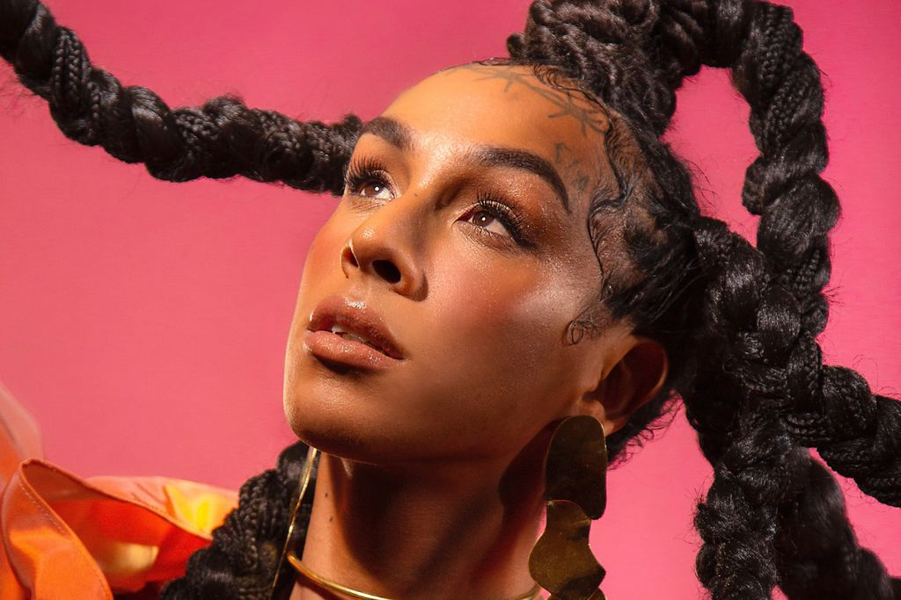
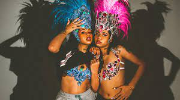

Linn da Quebrada
Linn da Quebrada é uma artista LGBTQIA+ com uma história de mais de 30 anos para contar. Como ela mesmo disse, ela é uma grande exceção. “A grande maioria das travestis não tem a possibilidade de trabalhar, de atuar, de ter dignidade na sociedade”. Linn da Quebrada vai contra a corrente do sistema. Além de cantora, é compositora, atriz e, claro, uma ativista social de extrema importância. Lina Pereira dos Santos nasceu dia 18 de julho de 1990, na Zona Leste da cidade de São Paulo (SP). No entanto, foi criada no interior na cidade de Votuporanga.
Leia mais...Audio Sample
Tasha e Tracie
As gêmeas Tasha e Tracie Okereke ganham cada dia mais destaque na cena do rap nacional unindo rimas que enaltecem a mulher negra e moda em um movimento afrofuturista. Criadoras do blog “Expensive $hit”, elas trabalham com a arte e a informação para a valorização da autoestima e da autonomia dos jovens das periferias. Aliás, foi exatamente na moda que elas começaram esse movimento, que teve reconhecimento internacional. O blog já fazia sucesso lá em 2014, trazendo referências de estilos e conhecimento voltado para a quebrada. Nascidas na Zona Norte de São Paulo, as duas são filhas de mãe brasileira e pai nigeriano. A entrada na cena musical aconteceu em 2019, quando colocaram suas rimas para fora e ocuparam espaço na cultura rap paulista.
Leia mais...Audio Sample
Negra Li

Nascida no bairro da Brasilândia, zona norte de São Paulo, Negra Li começou a se interessar pela música ainda na infância.[1] Nessa época, cantava hinos da igreja evangélica Congregação Cristã no Brasil.[1] Quando adolescente, imitava Whitney Houston,[2] foi a partir desse momento que passou a ouvir mais a black music. Negra Li iniciou sua carreira musical com o grupo de rap RZO, permanecendo com eles entre 1996 e 2004. Em 2005 lançou seu primeiro álbum solo em parceria com o rapper Helião.[1] Em 2006, estrelou o filme de Tata Amaral, Antônia,[1] que, no ano seguinte, virou um seriado homônimo na TV Globo.
Leia mais...Audio Sample